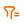
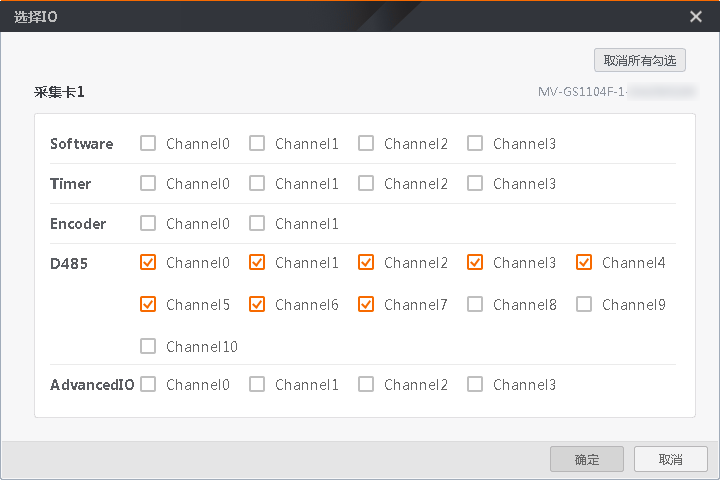
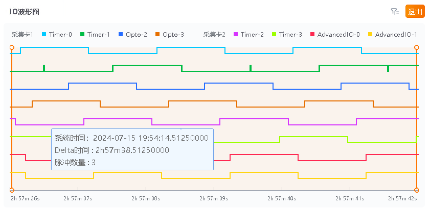
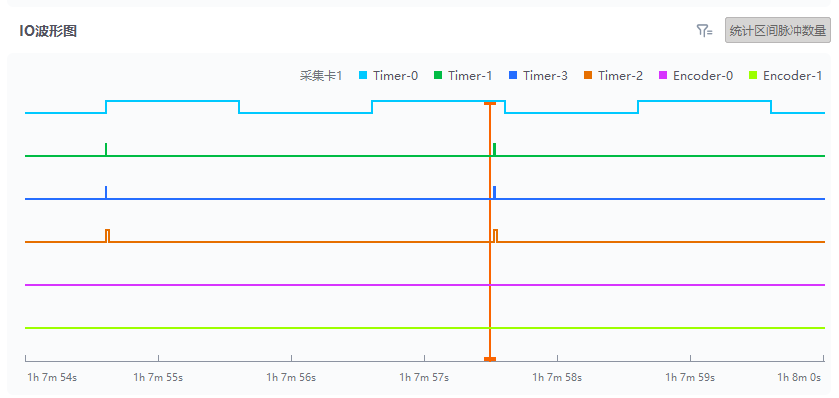
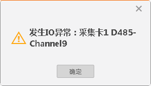
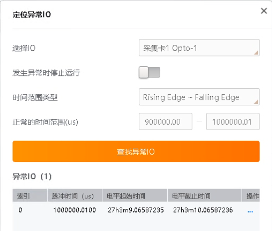

事件图处解析后的事件通过IO波形图可查看相应IO的响应波形图，可对该事件下的脉冲数量进行实时统计。
针对“总览图”和“事件图”选择和解析的事件，单击IO波形图界面的

，对该采集卡显示的IO线路进行选择，如下图所示。选择后，单击确定即可。IO波形图最多可显示8路IO波形通道。

图 1 选择IO通过IO波形图可清晰查看各IO的触发情况。单击右侧的，将鼠标悬空至IO波形图处，可查看相应IO波形的系统时间、Delta时间以及脉冲数量信息，如下图所示。若不需要统计区间脉冲数量，单击退出即可。

图 2 查看IO波形信息在IO波形图处单击任意时间点，向上拖动鼠标滚轮，可对界面进行放大，向下拖动即还原；按住鼠标右键，左右拖动鼠标可查看前后时间段的IO波形图。

图 3 IO波形图监测单击右侧的可对IO波形图中的异常IO进行筛选定位。
在定位异常IO界面中，可进行如下操作：
选择IO：下拉选择需要筛选定位的IO。
发生异常时停止运行：选择是否开启使能。若开启使能，当检测到异常IO时，弹出异常IO提醒界面，如下图所示，同时工具停止运行。

图 4 IO异常提醒界面时间范围类型：下拉选择需筛选的时间范围类型。
正常脉冲持续时间：设置需筛选的时间范围。
查找异常IO：单击查找异常IO，异常IO的相关信息将显示在界面下方，单击异常IO对应操作列的定位可定位至该异常IO处。

图 5 定位异常IO